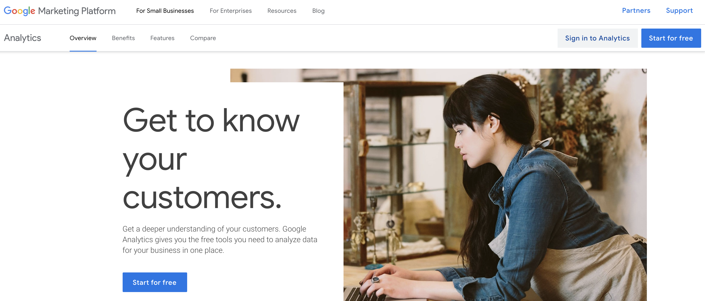
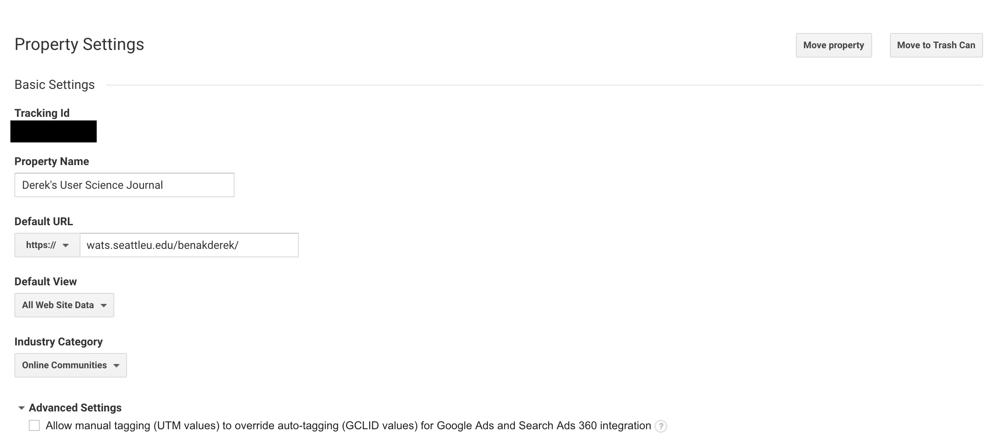
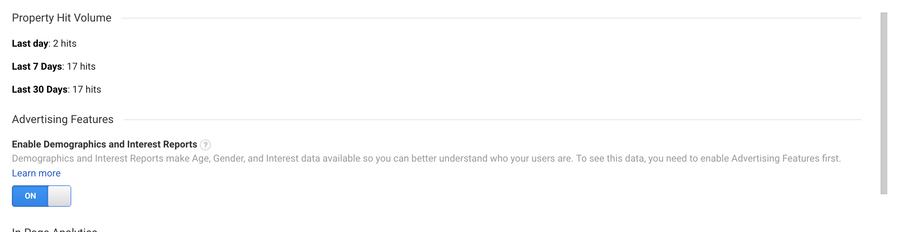
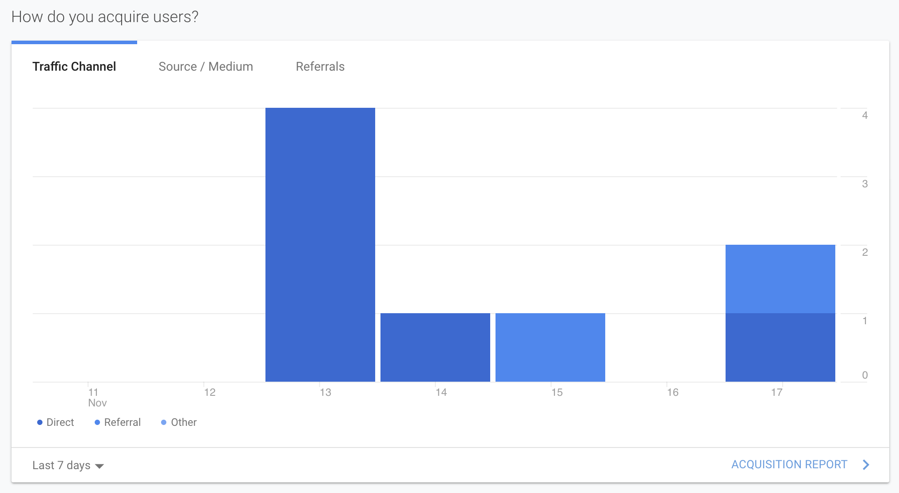
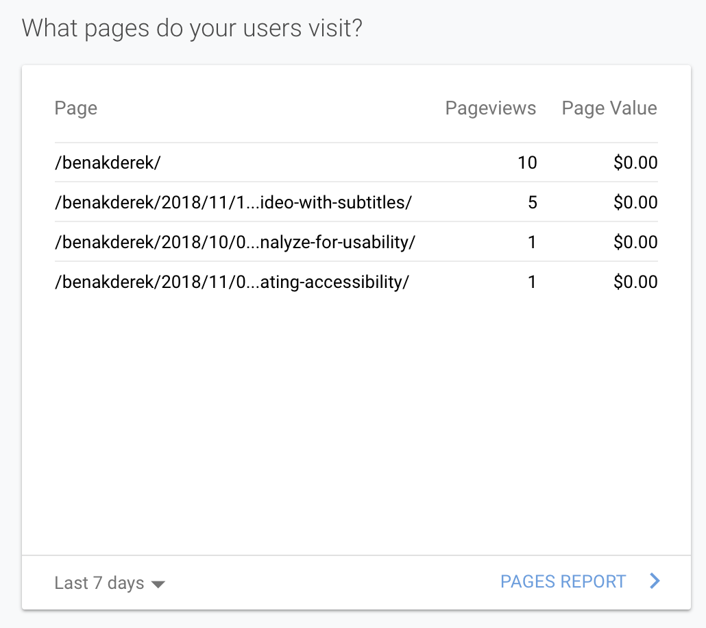
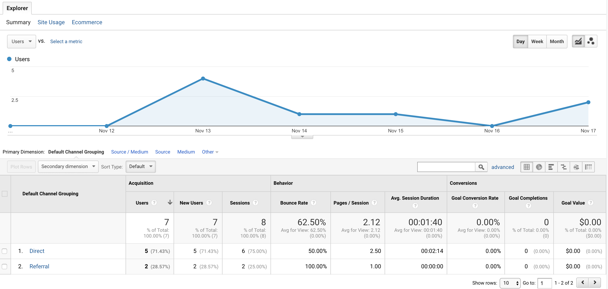
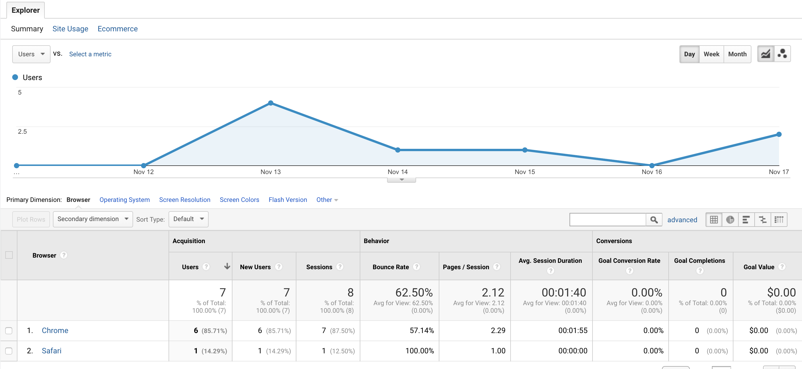
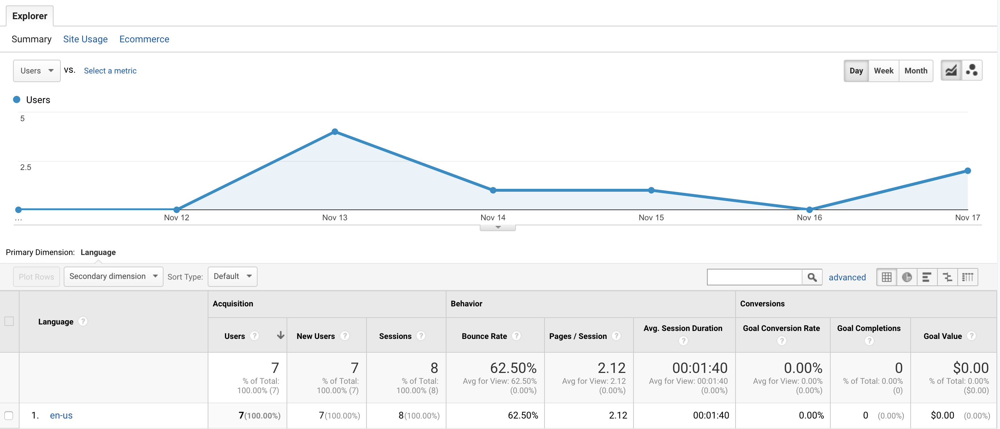
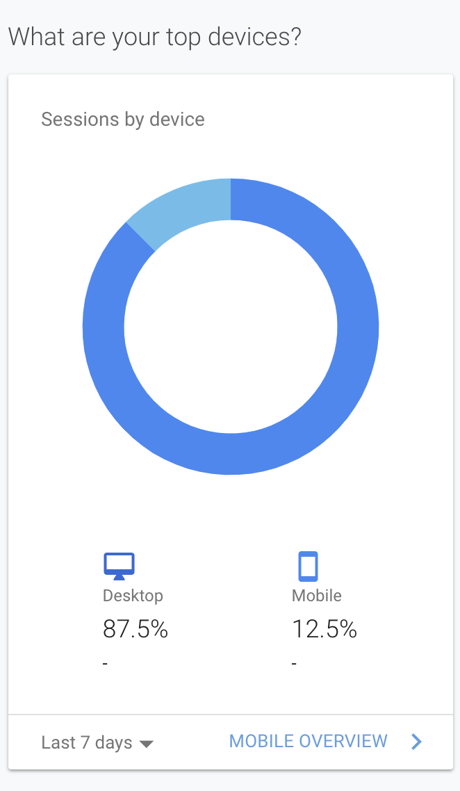

This week’s project involves me getting my first experience using data analytics to get a better idea of how web developers can use analytics data to determine how users are engaging with my website. I decided to use my User Science Journal site since I was updating this site on a weekly basis.
Test Statements
- Who is coming to my site? (Male or female? Young or old? From some specific region/country, or international?)
- How do they get here? (Directly typing in the URL? Clicking links on other sites? Search?)
- What search terms are leading people to my site?
- What parts of my site are the most popular?
- What type of browser are my visitor primarily using?
- What browser language are my visitors using while reading my site?
Test Statement Hypotheses
- My site is most popular with women, ages 24-39, from the U.S.A.
- My users come from the results in a search engine such as Google, Bing, or Yahoo.
- The most popular search terms that lead people to my site are the buzzwords that are common throughout the titles in my posts such as usability, analyze, test and evaluating. Any variation of these words is used more than once in my posts are a powerful search word that may lead to appearing in a search result.
- The most popular pages on my site are my posts.
- I think my visitors are using primarily Google Chrome.
- I believe my users are reading my site in English since it’s the default language.
Setting up Google Analytics
In working through this assignment, I completed Section 1 Introducing Google Analytics in Google Analytics for Beginners on Monday, and then proceeded to the Google Marketing Platform website and clicked the Start for Free button to obtain my Google Analytics code.
 Google Marketing Platform Analytics HomepageAfter following this process and completing all the required steps allowed me to Set up Analytics tracking and get a tracking ID and tracking code that I could put in the header for my User Science Journal.
 My User Science Journal Property SettingsAt this point, I established my test statements at the beginning since this was my first real experience in creating test statements that would be tested by Data Analytics, so I felt most comfortable using the four provided in the project description on Canvas as well as adding two additional statements after completing Section 3 Basic Reporting from Google Analytics for Beginners course:
- What type of browser are my visitor primarily using?
- What browser language are my visitors using while reading my site?
Findings
Test Statement One: Unfortunately, I didn’t enable the Advertising Features Enable Demographics and Interest Reports option during set-up, so I don’t have data on the demographics of my visitors. This is a pretty significant error on my part but a good learning opportunity to remember for the future. I will need to check back in a few days and add this data and findings into my report.
 Advertising Features - Enable Demographics and Interest Reports OptionTest Statement Two: My site had seven visitors over the past week since adding Google Analytics code, six visitors were direct (directly typing my URL into their search engine) and I also had two referrals’ which indicate that these two visitors arrived on my site clicked on a website other than a search engine. I don’t quite understand where this discrepancy comes from having seven visitors but eight mediums.
 Acquire Users MetricTest Statement Three: Analyzing the data from the metric, What Pages do your users Visit? and seeing that my post from last week about adding subtitles to a video received 5 pages views leads me to believe that using key search words helps visitors land on my website.
 What Pages are my users visiting?Test Statement Four: The parts of my website that are the most popular are my homepage and then my posts since both account for a majority of my page views, However my bounce rate of 60% means that I would need to add more content than my posts to retain visitors.
 Channels/Mediums DataTest Statement Five: My visitors are are primarily using Google Chrome on a desktop.
 Channels/Mediums DataTest Statement Six: My visitors are using English in their web browsers while visiting my website.
 Web Browser Language MetricOne piece of data that I didn’t consider earlier in the week to test was what platform my visitors would primarily use to visit my website: desktop or mobile.
 Are visitors using a Desktop or Mobile device?Take-Away
I can tell that I am still learning how to properly enable data analytics and create valid test statements that are not only applicable to my site but that I will be able to test by understanding what Google Analytics offers it’s users. I am optimistic that similar to my Analyze for Usability, Usable Design Analysis posts. Both were part of an overall learning experience that saw me grow in my understanding of user science.